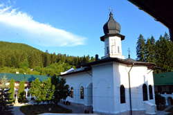

Mănăstirea Agapia
 Mănăstirea Agapia este o mănăstire ortodoxă de maici, situată la 9 km de orașul Targu Neamt, la 43 km de orașul Piatra Neamt și la aproximativ 7 km de DN 15 C, la o altitudine de 480 m. Asezământul monahal de la Agapia este format din 2 complexe de cladiri: Agapia Veche, ce a fost ridicată in anul 1585 de Petru Schiopul și Agapia Nouă, construită din banii Hatmanului Gavril în anul 1642, fratele domnitorului Vasile Lupu și refacută de domnitorul Șuțu dupa incendiul din 1821.
{kind=link}
Drumul către Agapia Veche este deosebit de pitoresc și mulți pelerini îl fac pe jos, cântand prin padure. Pictată de către Nicolae Grigorescu în anul 1858, mănăstirea Agapia devine o veritabilă bijuterie arhitecturală care îmbină caracteristici ale stilului bizantin cu stilul neoclasic și cu arta românească.
Scurt Istoric
Așezată pe valea pârâului Agapia – Topolița, la poalele culmii Măgura, lângă Mănăstirea Văratec, Mănăstirea Agapia este singura așezare monahală ortodoxă din Romania care poartă numele de “dragoste creștină”, provenind din grecescul “agapis”. Mănăstirea, cât și zona care o înconjoară, a preluat numele de la călugărul Agapie, care în secolul al XIV-lea a construit, în această zonă a Neamțului, o bisericuță din lemn. Prima mențiune documentară care delimitează moșia Mănăstirii Agapia de cea a Mănăstirii Neamț s-a făcut prin Hotarnica lui Ilies Voda în 1437.
Primii ctitori voievozi ai sfintei Mănăstiri Agapia sunt Petru Rareș și Elena Doamna, amintiți în Vechiul Pomelnic de la mănăstire, prin grija cărora s-a construit prima biserică de piatră. Totodata, o inscripție aflată în pronasul bisericii mari de la Agapia din Vale menționează pe Petru Schiopul și Ruxandra Doamna ca fiind intâii ctitori domnești, în anul 1585. Datorită terenului instabil pe care s-a construit biserica și a spațiului de extindere limitat, în jurul anilor 1600, o parte din călugări s-au mutat în vale unde au construit o mică biserică in jurul căreia s-a dezvoltat Mănăstirea Agapia de astazi, cunoscută și sub numele de Agapia Nouă, Agapia din Vale sau Agapia Mare care este urmașa Agapiei Vechi.
Imagini de la Mănăstirea Agapia
Patrimoniul Manastirii Agapia
În anul 1858 interiorul bisericii de la Agapia a fost pictat de catre Nicolae Grigorescu care, deși avea doar 18 ani, a reușit să realizeze o remarcabilă suită de compoziții murale și de icoane pline de mișcare, realism și lumină. Pictorul a îmbinat cu success tradiția bizantină cu stilul neoclasic și cu arta românească. Inspirandu-se pentru compoziții din marii meșteri ai Renașterii, Grigorescu a folosit modele vii, alese cu multă grijă, pentru a realiza portretele sale.
Astfel, pe usa stangă a altarului, a pictat Icoana Sfantului Gheorghe în picioare, inspirandu-se din sculptura lui Donatello din Florența, iar pentru a realiza pe prorocul Daniel, din stanga registrului de sus al tampei, și-a facut autoportretul. Pictura Mănăstirii Agapia are o deosebită valoare artistică deoarece este dominată de un suflu puternic realist, de autenticitate, de viața. Capodopera lui Grigorescu la Mănăstirea Agapia este reprezentată de trei tablouri și anume: Portretul Sfântului Gheorghe de pe ușa altarului, Intrarea în Ierusalim și Maica Domnului cu Iisus în brațe. Iisus Pancocrator este pictat în cupola boltei naosului, tronând pe un curcubeu, care pune în evidenta tricolorul românesc.
La sfânta Mănăstire Agapia găsim o impresionantă colecție muzeală de artă medievală și religioasă dar și o bibliotecă ce cuprinde carți și manuscrise vechi. Casa memorială Alexandru Vlahuța se afla in spatele mănăstirii și poate fi vizitată. Pe drumul forestier ce ocoleste casa memorială Alexandru Vlahuța se poate ajunge direct prin padure la mănăstirea Sihla (cunoscuta pentru peștera unde a trăit aproape 40 de ani Sf Teodora) și apoi la mănăstirea Sihastria (loc de pelerinaj pentru mormântul preotului Cleopa Ilie și preotului Paisie Olaru).